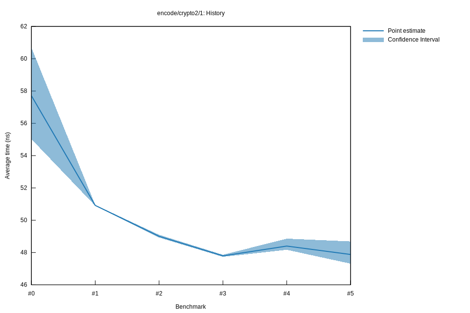

# 52022-10-16T20:00:25+03:00
|
Lower Bound |
Estimate |
Upper Bound |
| Value: |
47.31ns |
47.88ns |
48.69ns |
| Throughput: |
60.47MiB/s |
59.76MiB/s |
58.76MiB/s |
| Change in Value: |
-2.0012% |
-1.0458% |
+0.0347% |
| Change in Throughput: |
+2.0420% |
+1.0568% |
-0.0347% |
No change in performance detected.
# 42022-10-16T17:20:53+03:00
|
Lower Bound |
Estimate |
Upper Bound |
| Value: |
48.17ns |
48.40ns |
48.86ns |
| Throughput: |
59.39MiB/s |
59.11MiB/s |
58.56MiB/s |
| Change in Value: |
+0.7119% |
+1.0595% |
+1.5124% |
| Change in Throughput: |
-0.7068% |
-1.0484% |
-1.4898% |
No change in performance detected.
# 32022-10-15T17:13:00+03:00
|
Lower Bound |
Estimate |
Upper Bound |
| Value: |
47.73ns |
47.79ns |
47.86ns |
| Throughput: |
59.94MiB/s |
59.86MiB/s |
59.78MiB/s |
| Change in Value: |
-2.5457% |
-2.3445% |
-2.1224% |
| Change in Throughput: |
+2.6121% |
+2.4007% |
+2.1684% |
No change in performance detected.
# 22022-10-15T16:48:34+03:00
|
Lower Bound |
Estimate |
Upper Bound |
| Value: |
48.93ns |
49.00ns |
49.10ns |
| Throughput: |
58.47MiB/s |
58.38MiB/s |
58.27MiB/s |
| Change in Value: |
-3.9386% |
-3.7828% |
-3.6138% |
| Change in Throughput: |
+4.1000% |
+3.9315% |
+3.7493% |
No change in performance detected.
# 12022-10-08T17:25:19+03:00
|
Lower Bound |
Estimate |
Upper Bound |
| Value: |
50.89ns |
50.92ns |
50.94ns |
| Throughput: |
56.22MiB/s |
56.19MiB/s |
56.16MiB/s |
| Change in Value: |
-8.0409% |
-5.4114% |
-2.9665% |
| Change in Throughput: |
+8.7440% |
+5.7210% |
+3.0572% |
No change in performance detected.
# 02022-10-08T17:06:22+03:00
|
Lower Bound |
Estimate |
Upper Bound |
| Value: |
55.03ns |
57.71ns |
60.68ns |
| Throughput: |
51.99MiB/s |
49.58MiB/s |
47.15MiB/s |